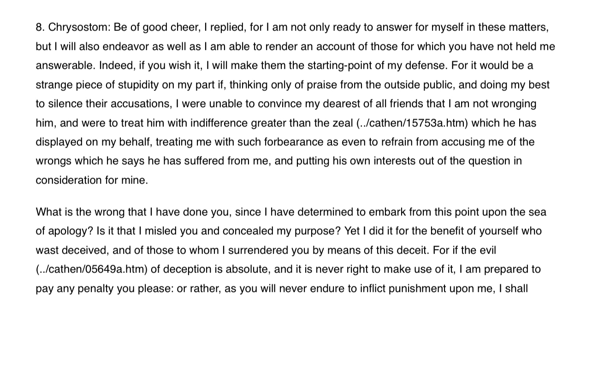

Falsehood enhances god
Home
About
Contact
Can Christians fool you to convince you to be a Christian? The answer according to John Chrysostom is yes  Source:
https://www.newadvent.org/fathers/19221.htm
Note: Shias say the same thing "Their hearts are all alike"